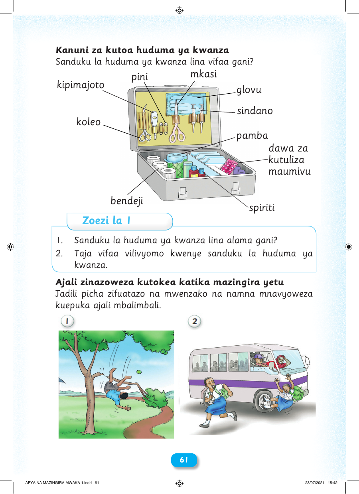

Kanuni za kutoa huduma ya kwanza Sanduku la huduma ya kwanza lina vifaa gani? mkasi pini kipimajoto glovu sindano koleo pamba dawa za kutuliza maumivu bendeji spiriti Zoezi la 1 1. Sanduku la huduma ya kwanza lina alama gani? 2. Taja vifaa vilivyomo kwenye sanduku la huduma ya kwanza. Ajali zinazoweza kutokea katika mazingira yetu Jadili picha zifuatazo na mwenzako na namna mnavyoweza kuepuka ajali mbalimbali. 6611 AFYA NA MAZINGIRA MWAKA 1.indd 61 23/07/2021 15:42